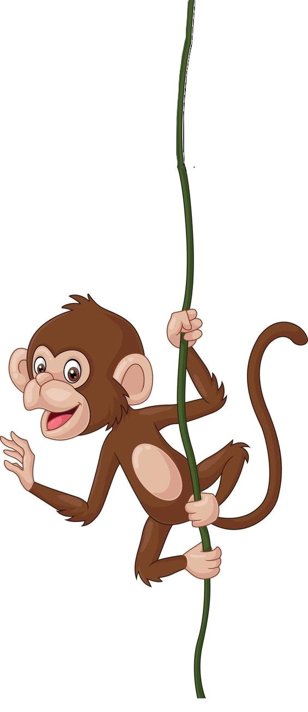
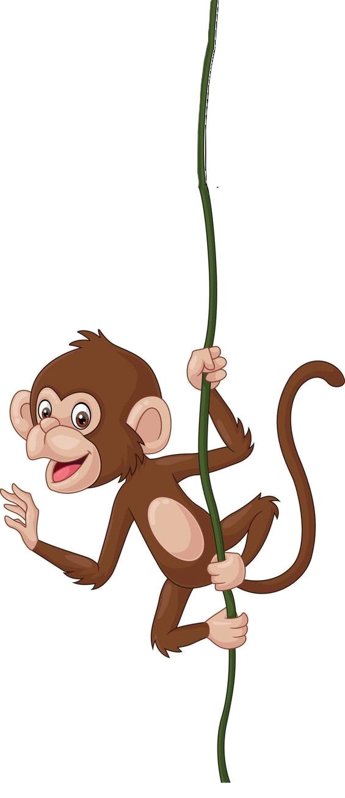
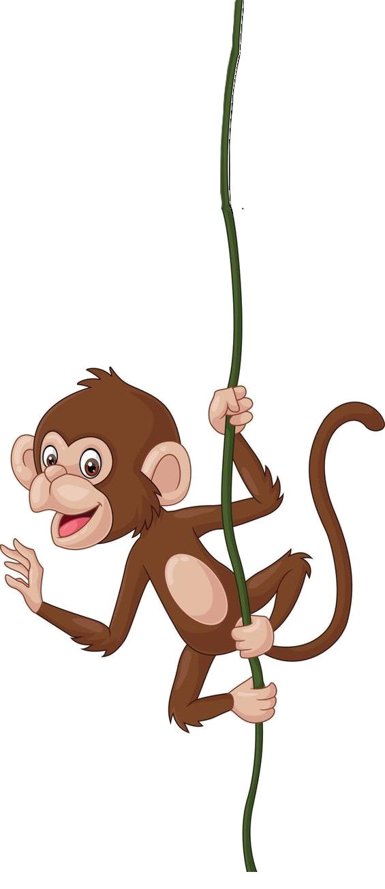

Clique em uma figura para cadastrar um animal:

A presente página tem como objetivo praticar as relações de herança e poliformismo entre superclasse e subclasse em JavaScript. Foi solicitada a criação de uma superclasse Animal, com propriedades de nome e número de patas. Subclasses de Cachorro, Gato e Pássaro também foram criadas, herdando características e sobreescrevendo o método de "EmitirSom()" com as devidas onomatopeias referentes a cada animal. Em complemento ao exercício, criei uma página simples, com um menu interativo, e estilizada com CSS - colocando em prática transições, hover e flexbox.